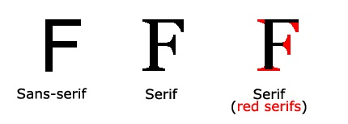

User Interface
Interface Design
8 Golden Rules
 Fonts
FontsColor
Sound
Accessibility
Mobile Devices
Interface Examples
Native Apps
Google Analytics
Fonts
Font is a very important, and often overlooked aspect of user interface design. It is important to select fonts that are both pleasing to the eye and easy to read. Continue reading for a more advanced look at fonts and how they can effect design.
The Art of the Font
There are two main styles of fonts available for use, serif and sans-serif. Serif fonts include small lines at the ends of some characters. Below is a picture the helps distinguish the difference between the two:

It is generally accepted that sans-serif fonts are easier to read on the web.
Another type of font is the monospace font. Here, each character takes up the same amount of space. Monospace fonts are the best choice for development or displaying code.
Below are some examples of each type of font.
Times New Roman, a serif font.
Georgia, a serif font.
Arial,a sans-serif font.
Comic Sans, a generally disrespected sans-serif font.
Courier New, a monospace font.
Lucida Console, a monospace font.
Font Cross Platform Compatibility
W3C provides a list of web safe fonts. These are fonts that are recognized are cross-browser compatible across the vast majority of browsers.
With the introduction of CSS3 came Web fonts. Web fonts allow Web designers to use fonts that are not installed on the user's computer.
Check out this cool font!
@font-face { font-family: myFirstFont; src: url(../images/o.woff); } p { font-family: myFirstFont; }
Font Readability
As mentioned, sans-serif fonts are generally easier to read on web and mobile devices than serif fonts. However, serif fonts are usually preferred when printing a hard copy of a document. Luckily CSS allows the changing of attributes based on whether the media is a screen or print. Go ahead, look at the print preview for this page!
@media print { p { font-family: "Times New Roman", Times, serif; font-size: 1em; color: red; } }
Font Size, Accessibility and Scaling
The font-size property sets the size of the text. Being able to manage the text size is important in web design. However, you should not use font size adjustments to make paragraphs look like headings, or headings look like paragraphs. Always use the proper HTML tags for headings and for paragraphs. The font-size value can be an absolute, or relative size.
Absolute size:
Sets the text to a specified size. Does not allow a user to change the text size in all browsers (bad for accessibility reasons) Absolute size is useful when the physical size of the output is known.
Relative size:
Sets the size relative to surrounding elements. Allows a user to change the text size in browsers.
Scaling:
The best way to Scale text is by using Em. This allows re-scaling of the text in browser, and is supported in all modern browsers. An example of how to do this is below.
body { font-size: 100%; } h1 { font-size: 2.5em; } h2 { font-size: 1.875em; } p { font-size: 0.875em; }